{% load static %}
<!DOCTYPE html>
<html lang="zh-CN">

<head>
    <meta charset="UTF-8">
        <meta http-equiv="X-UA-Compatible" content="IE=edge">
        <meta name="viewport" content="width=device-width, initial-scale=1.0">
        <title>图书管理系统-欢迎</title>
        <link rel="stylesheet" href="Animate.css">
        <link rel="stylesheet"
        href="https://cdnjs.cloudflare.com/ajax/libs/animate.css/4.1.1/animate.min.css"/>
        <!-- 在 HTML 文件中 -->
        <link rel="stylesheet" type="text/css" href="../static/a1.css">

</head>

<body>
    <div class="header">
        <div class="inner-header flex">
            <div class="B8">
                <h1 style="font-weight: bolder" class="animate__animated animate__pulse">欢迎使用图书推荐系统</h1>
                <h1 style="margin-top:50px;font-size:40px" class="animate__animated animate__backInLeft">本系统将为您推荐您喜欢的书籍</h1>
                <h1 style="margin-top:50px;font-size:40px" class="animate__animated animate__backInRight">平台致力于让您拥有一个愉快的体验</h1>
            </div>
        </div>
        <div class="B6">
            <a class="C1" href="#" style="float: right;font-size: 25px;color:white;text-decoration: none;">关于我们</a>
            <a class="C1" href="#" style="float: right;margin-right:30px;font-size: 25px;color:white;text-decoration: none;">平台介绍</a>
            <a class="C1" href="4.intro.html" style="float: right;margin-right:30px;font-size: 25px;color:white;text-decoration: none;">特色功能</a>
            <a class="C1" href="#" style="float: right;margin-right:30px;font-size: 25px;color:white;text-decoration: none;">支持一下</a>
        </div>
        <div class="B7">
            
        </div>
        <div class="B1">
            <div class="B4">
                <a rel="nofollow" href="https://tianchi.aliyun.com/dataset/31828?spm=a2c22.12282016.0.0.3d6529feqm24qG" style="color:white;text-decoration: none;float:left;margin-top: 10px;margin-left: 30px;">阿里云数据集</a>
            <span class="B5" style="float:left;margin-top: 10px;margin-left: 10px;" >|</span>
            <a rel="nofollow" href="https://www.baidu.com/" style="color:white;text-decoration: none;float:left;margin-top: 10px;margin-left: 10px;">百度官网</a>
            <span class="B5" style="float:left;margin-top: 10px;margin-left: 10px;" >|</span>
            <a rel="nofollow" href="https://www.csdn.net/" style="color:white;text-decoration: none;float:left;margin-top: 10px;margin-left: 10px;">CSDN官网</a>
            <span class="B5" style="float:left;margin-top: 10px;margin-left: 10px;" >|</span>
            <a rel="nofollow" href="https://www.runoob.com/" style="color:white;text-decoration: none;float:left;margin-top: 10px;margin-left: 10px;">菜鸟教程</a>
            <span class="B5" style="float:left;margin-top: 10px;margin-left: 10px;" >|</span>
            <a rel="nofollow" href="https://www.bookcrossing.com/" style="color:white;text-decoration: none;float:left;margin-top: 10px;margin-left: 10px;">BookCrossing</a>
            <span class="B5" style="float:left;margin-top: 10px;margin-left: 10px;" >|</span>
            <a rel="nofollow" href="https://github.com/TaChangFeng" style="color:white;text-decoration: none;float:left;margin-top: 10px;margin-left: 10px;">GitHub</a>
            <span class="B5" style="float:left;margin-top: 10px;margin-left: 10px;" >|</span>
            <a rel="nofollow" href="{% url 'about' %}" style="color:white;text-decoration: none;float:left;margin-top: 10px;margin-left: 10px;">网站说明</a>
            <span class="B5" style="float:left;margin-top: 10px;margin-left: 10px;" >|</span>
            <a rel="nofollow" href="download.html" style="color:white;text-decoration: none;float:left;margin-top: 10px;margin-left: 10px;">文件下载</a>
            </div>
        </div>
        <div>
            <!--
                xmlns:SVG命名看见URI
                viewBox:定义当前视口（viewbox）中绘制区域的位置大小
                preserveeAspectRatio：定义了绘制区域在视口中的对齐方式
                shape-rendering：定义了形状的渲染方式（如何呈现头像的锯齿效果）
             -->
            <svg class="waves" xmlns="http://www.w3.org/2000/svg" xmlns:xlink="http://www.w3.org/1999/xlink"
                viewBox="0 24 150 28" preserveAspectRatio="none" shape-rendering="auto">
                <!-- 定义一个defs元素，用于存储各种元素的定义，可以被其他元素引用。
                    在defs元素中定义了一个名为“gentle-wave”的路径元素，用于描述波浪形状
                    改路径秒苏联一系列二次贝塞尔曲线的控制点坐标，从而实现了波浪形状 -->
                <defs>
                    <path id="gentle-wave"
                        d="M-160 44c30 0 58-18 88-18s 58 18 88 18 58-18 88-18 58 18 88 18 v44h-352z" />
                </defs>
                <!-- 定义一个g元素，用于讲多个图形组合在一期，并应用一些样式
                    在g元素中使用use元素多次引用了赚钱定义的名为gentle-wave的路径元素
                    通过设置不同的x，y坐标和填充颜色，实现了波浪形状和渐变效果 -->
                <g class="parallax">
                    <use xlink:href="#gentle-wave" x="48" y="0" fill="rgba(255,255,255,0.7)" />
                    <use xlink:href="#gentle-wave" x="48" y="3" fill="rgba(255,255,255,0.5)" />
                    <use xlink:href="#gentle-wave" x="48" y="5" fill="rgba(255,255,255,0.3)" />
                    <use xlink:href="#gentle-wave" x="48" y="7" fill="#fff" />
                </g>
            </svg>
        </div>
    </div>
    <div class="content flex">
        <a class="animate__animated animate__swing C1" href="{% url 'mainpage' %}" style="color:rgb(90, 198, 129);font-size: 35px;">开始探索系统</a>
    </div>
    
</body>

</html>